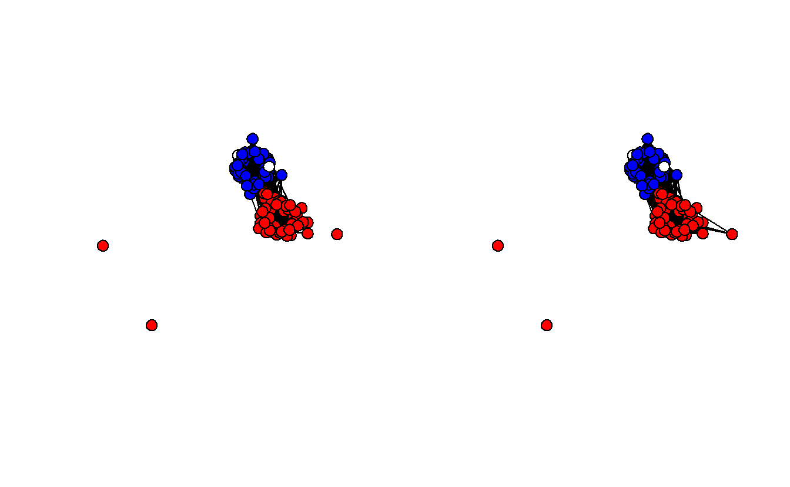
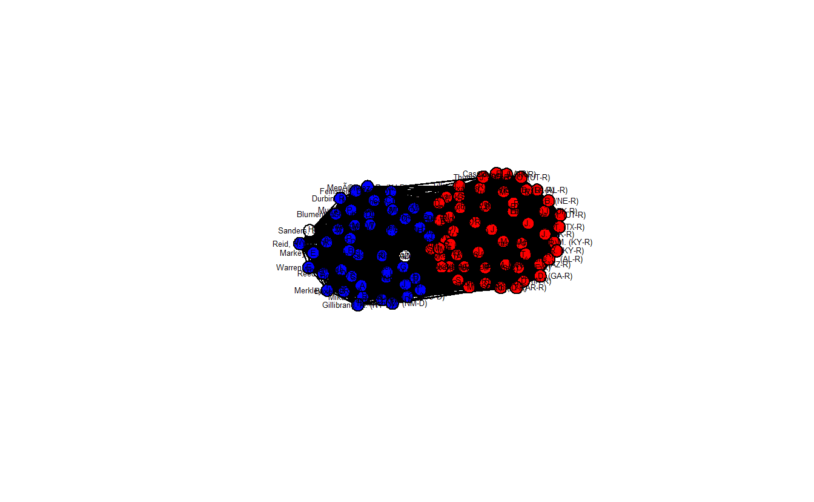
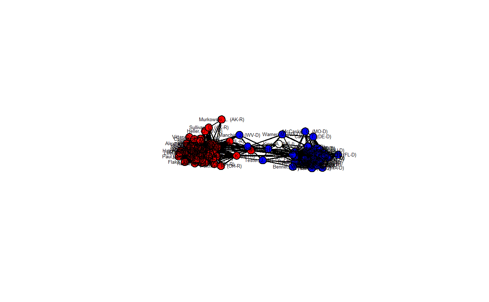
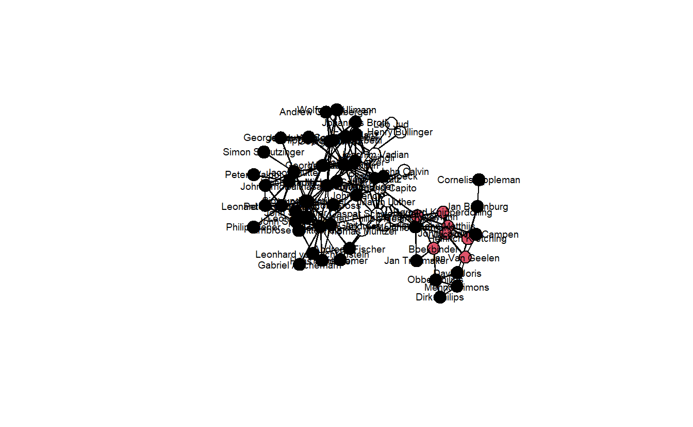
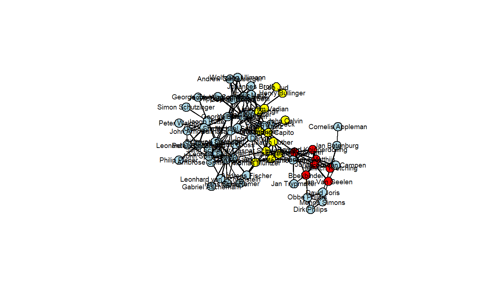
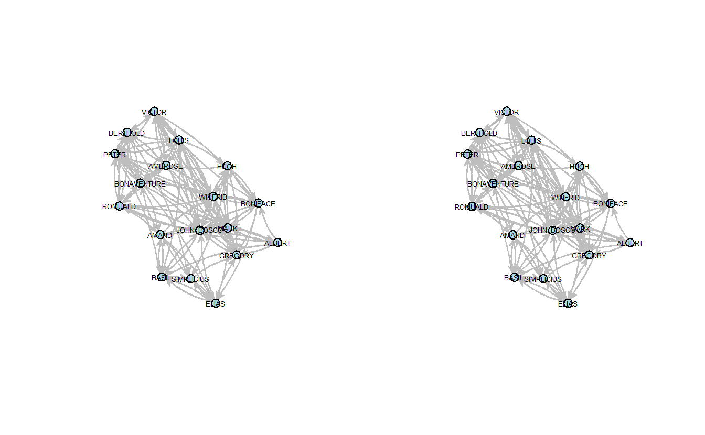
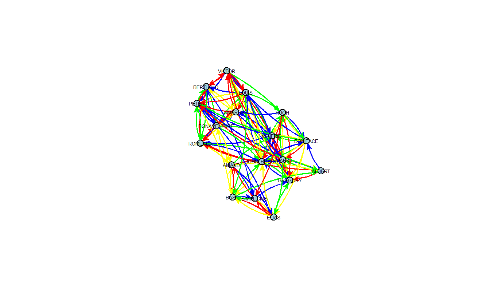

6 Manipulating and Simplifying Social Network Data in statnet
In this lab we’ll explore a variety of methods for manipulating and simplifying social network data. As with the previous lab, we’ll use a variety of social networks, some of which you’ll recognize from other classes.
6.1 Setup
Find and open your RStudio Project associated with this class. Begin by opening a new script. It’s generally a good idea to place a header at the top of your scripts that tell you what the script does, its name, etc.
#######################################################################
# What: Manipulating and Simplifying Social Network Data
# File: lab2_statnet.R
# Created: 02.28.14
# Revised: 12.23.21
#######################################################################If you have not set up your RStudio Project to clear the workspace on exit, your environment contain the objects and functions from your prior session. To clear these before beginning use the following command.
Proceed to place the data required for this lab (Anabaptists.csv, Anabaptists.net, High esteem.csv, Liking3.csv, Positive Influence.csv, Praise.csv, S114 attributes.csv, and S114.csv) also inside your R Project folder. We have placed it in a sub folder titled data for organizational purposes; however, this is not necessary.
6.2 Load Libraries
We need to load the libraries we plan to use. Here we will use statnet.
In addition to statnet, we will be introducing and using backbone. Since this may be the first time you are using this tool, please ensure you install it prior to loading it.
6.3 Extracting the “Backbones” of Two-Mode Network Projections
In this section, we illustrate how to extract the backbone of a projected two-mode network, a concept that we discussed in class and will not discuss in too much detail here. The basic idea is to use statistical tests to compare an edge’s observed weight in the two-mode projection to the distribution of its expected weight under a null model, controlling for different factors. An edge’s observed weight is considered to be statistically significant (and thus an actual tie) if it is in the upper or lower tail of the distribution of possible edge weights. Positive edges (ties) are found in the upper tail, while negative edges are found in the lower tail. For this, we will use the backbone package (Domagalski, Neal, and Sagan 2021).
Because we need a much larger network to stochastically (statistically) project the backbone, here we will use bill co-sponsorship in the 114th US Senate (S114.csv) to illustrate this process.
The code found in this section is adapted from code written by Zachary Neal, Rachel Domagalski, and Bruce Sagan for the “Backbone Workshop” delivered on 13 July 2020, which can be viewed at https://youtu.be/qLrUMZp93D0. For complete workshop materials and more details about backbone, visit http://www.zacharyneal.com/backbone or contact Zachary Neal at zpneal@msu.edu.
Specify the seeds before starting the analysis.
6.3.1 Load Data
Load and examine the network data. We will begin working with matrix data. As you can see, there are 100 Senators who sponsored a total of 3,549 bills.
senate_mat <- as.matrix(
read.csv("data/S114.csv",
row.names = 1,
header = TRUE,
check.names = FALSE)
)
# Retrieve the dimension of a matrix.
dim(senate_mat)[1] 100 3589 sj9 sj8 sj7 sj6 sj5
Alexander, L. (TN-R) 0 1 0 1 0
Boxer, B. (CA-D) 0 0 0 0 1
Cantwell, M. (WA-D) 0 0 0 0 1
Carper, T. (DE-D) 0 0 0 0 1
Cochran, T. (MS-R) 0 1 0 1 0S114attributes_mat <- as.matrix(
read.csv("data/S114 attributes.csv",
header = TRUE,
row.names = 1,
check.names = FALSE)
)Take a quick look.
Alexander, L. (TN-R) Boxer, B. (CA-D) Cantwell, M. (WA-D)
1 2 2
Carper, T. (DE-D) Cochran, T. (MS-R)
2 1 6.3.2 Non-Statistical Projections of the Co-Sponsorhip Data
6.3.2.1 Standard Projection
Project the one-mode network the by multiplying the matrix times its transpose.
As the result from the dim() function indicates, the one-mode network is a 100 x 100 network (100 senators x 100 senators).
[1] 100 100Turn the matrix into an network object
Network attributes:
vertices = 100
directed = FALSE
hyper = FALSE
loops = FALSE
multiple = FALSE
bipartite = FALSE
total edges= 4949
missing edges= 0
non-missing edges= 4949
Vertex attribute names:
vertex.names
Edge attribute names not shown Now, plot the network, but first set the colors to blue (Democrats), red (Republicans), and white (Independents).
# Create recoding named vector
recode <- c(`1` = "red", `2` = "blue", `3` = "white")
# Recode and assign strings to vertex attribute
senators_net %v% "color" <- recode[as.character(S114attributes_mat[, 1])]
# Plot
gplot(dat = senators_net,
gmode = "onemode",
mode = "fruchtermanreingold",
vertex.col = senators_net %v% "color",
vertex.cex = 2,
usearrows = FALSE)How densely interconnected are actors?
[1] 0.999798The network plot is unhelpful because it’s so dense. It’s almost 100% (0.999798), which suggests that we’re picking up ties between senators that really shouldn’t be there.
6.3.2.2 Universal Threshold Projection
A common approach to reducing the number of ties in a projected one-mode network is to choose a threshold where cells greater than the threshold are set to “1” while all others are set to “0.” Here, we will use mean and median edge weights as thresholds. First, we need to get the mean and median edge weight.
Because the edge attributes weren’t displayed above, we need to see what the edge weight attribute is with the list.edge.attributes() command.
[1] "1" "na"Let’s see if 1 is the edge weight. Here we pull the first twenty edge weights.
[1] 10 15 12 40 48 48 42 16 52 18 37 32 52 48 9 40 30 11 46 27It appears that it is. Now, we can get the mean and median edge weight of the entire graph.
[1] 44.17054[1] 38Create a projection using mean edge weight.
threshold_mean_bb <- global(senate_mat,
# Set upper threshold value
upper = mean(get.edge.attribute(senators_net, "1")))
# Take a look at the matrix:
threshold_mean_bb[1:5, 1:5] Alexander, L. (TN-R) Boxer, B. (CA-D) Cantwell, M. (WA-D)
Alexander, L. (TN-R) 0 0 0
Boxer, B. (CA-D) 0 0 1
Cantwell, M. (WA-D) 0 1 0
Carper, T. (DE-D) 0 1 0
Cochran, T. (MS-R) 0 0 0
Carper, T. (DE-D) Cochran, T. (MS-R)
Alexander, L. (TN-R) 0 0
Boxer, B. (CA-D) 1 0
Cantwell, M. (WA-D) 0 0
Carper, T. (DE-D) 0 0
Cochran, T. (MS-R) 0 0Now create an network object from this matrix.
Create a projection using median edge weight.
threshold_med_bb <- global(senate_mat,
# Set upper threshold value
upper = median(get.edge.attribute(senators_net, "1"))
)
# Create an igraph graph with this object
threshold_med_net <- as.network(threshold_med_bb,
directed = FALSE,
ignore.eval = FALSE)Now, visualize the two projected networks.
# Set graph parameters to 1 row and 2 columns
par(mfrow = c(1, 2))
# Recode and assign strings to vertex attribute
threshold_mean_net %v% "color" <- recode[as.character(S114attributes_mat[, 1])]
threshold_med_net %v% "color" <- recode[as.character(S114attributes_mat[, 1])]
# Save coordinates
coords <- gplot.layout.fruchtermanreingold(threshold_med_net,
layout.par = NULL)
# Plot them
gplot(dat = threshold_mean_net,
gmode = "onemode",
coord = coords,
vertex.col = threshold_mean_net %v% "color",
vertex.cex = 2,
usearrows = FALSE)
gplot(dat = threshold_med_net,
gmode = "onemode",
coord = coords,
vertex.col = threshold_mean_net %v% "color",
vertex.cex = 2,
usearrows = FALSE)
Once again, take a look at each graph’s edge density.
[1] 0.4226263[1] 0.4987879These are definitely less dense (0.422 and 0.499) than the standard projection and Democrats and Republicans are clearly sorted into separate clusters. Still, these projections aren’t statistically derived although at least the thresholds aren’t entirely arbitrary. The next section demonstrates three statistical methods for extracting backbones.
6.3.3 Extracting Backbones
As noted above, the backbone package uses statistical tests to compare an edge’s observed weight in the bipartite (two-mode) projection to the distribution of its weights expected under a null model. And an edge’s observed weight is statistically significant if it is in the upper or lower tail of the distribution. We will only focus on positive ties, so we’ll only extract backbones based on the upper tail of the distribution.
With the co-sponsorship data, edge weights depend on how many bills each senator sponsors (row sums), and how many sponsors each bill has (column sums). (Note: If the rows were terrorists and the columns represented groups with which they were affiliated, then the edge weights would depend on how many groups to which the terrorists belonged and how many terrorists each group has.)
6.3.3.1 Hypergeometric Backbone
The Hypergeometric Model (formerly hyperg(), currently fixedrow()) controls exactly for row sums and is the fastest of the three backbone functions. First, we need to compute the probabilities and extract the backbone, saving it as an network object.
You’ll notice that there are numerous arguments for the fixedrow() function:
- The
signedoption returns a signed network if set toTRUE(default isFALSE); - The
alphaoption sets the significance test, thefwerindicates whether to apply at familywise error rate correction (default is"none"); - The
classindicates what type of object to return (it can return bothigraphandnetwork\statnetobjects).
This matrix object is being treated as an unweighted bipartite network of 100 agents and 3589 artifacts.# Extract a backbone network from a backbone object
hyperg_net <- backbone.extract(hyperg_probs,
signed = FALSE,
alpha = .01,
fwer = "none",
class = "network")Now, plot the projected network. The network is clearly sorted into two distinct clusters, and the density (0.704) is much lower than the standard projection.
hyperg_net %v% "color" <- recode[as.character(S114attributes_mat[, 1])]
gplot(dat = hyperg_net,
gmode = "onemode",
mode = "fruchtermanreingold",
vertex.col = hyperg_net %v% "color",
vertex.cex = 2,
displaylabels = TRUE,
label.cex = 0.4,
label.pos = 5,
usearrows = FALSE)
gden(hyperg_net)[1] 0.7038384
6.3.3.2 Stochastic Degree Sequence Model (SDSM) Backbone
The Stochastic Degree Sequence Model (sdsm()) approximately controls for both row and column sums and is slower than the Hypergeometric Model (but probably more accurate).
# Compute the probabilities
sdsm_probs <- sdsm(senate_mat,
# If TRUE the suggested text and citation will be
# displayed, which you can use for your write up.
narrative = TRUE) This matrix object is being treated as an unweighted bipartite network of 100 agents and 3589 artifacts.# Extract a backbone network from a backbone object
sdsm_net <- backbone.extract(sdsm_probs,
signed = FALSE,
alpha = .01,
fwer = "none",
class = "network")Now, plot the network backbone.
sdsm_net %v% "color" <- recode[as.character(S114attributes_mat[, 1])]
gplot(dat = sdsm_net,
gmode = "onemode",
mode = "fruchtermanreingold",
vertex.col = sdsm_net %v% "color",
vertex.cex = 2,
displaylabels = TRUE,
label.cex = 0.4,
label.pos = 5,
usearrows = FALSE)
gden(sdsm_net)[1] 0.3084848
This network plot clearly differs from what we’ve seen so far. The density is much lower (0.308) and now the two parties are more distinct. Moreover, there are a handful of senators who appear to lie in between the two clusters and are in positions of brokerage.
6.3.3.3 Fixed Degree Sequence Model (FDSM) Backbone
The Fixed Degree Sequence Model (fdsm()) exactly controls for both row and column sums and is the slowest of the three models (but probably the most accurate). We extract the FDSM backbone like we did the previous two.
This matrix object is being treated as an unweighted bipartite network of 100 agents and 3589 artifacts.Constructing empirical edgewise p-values -# Extract a backbone network from a backbone object
fdsm_net <- backbone.extract(fdsm_probs,
signed = FALSE,
alpha = .01,
fwer = "none",
class = "network")Now, let’s plot this backbone and calculate the edge density.
fdsm_net %v% "color" <- recode[as.character(S114attributes_mat[, 1])]
gplot(dat = fdsm_net,
gmode = "onemode",
mode = "fruchtermanreingold",
vertex.col = fdsm_net %v% "color",
vertex.cex = 2,
displaylabels = TRUE,
label.cex = 0.4,
label.pos = 5,
usearrows = FALSE)
gden(fdsm_net)[1] 0.3618182This network is a bit denser (0.362) than the previous network, but it looks quite similar to it. Once again, there are a handful of senators who appear to lie in between the two clusters and are in positions of brokerage.
6.4 Simplifying Networks in statnet: Anabaptist Network
For this exercise, we will use the Anabaptist Leadership network and its related attribute data. The dataset includes 67 actors, 55 who were sixteenth century Anabaptist leaders and 12 who were prominent Protestant Reformation leaders (e.g., Martin Luther, John Calvin, Ulrich Zwingli, Martin Bucer, and Philip Melanchthon) that had contact with and influenced some of the Anabaptist leaders included in this dataset. These data build on a smaller dataset (Matthews et al. 2013) that did not include some leading Anabaptist leaders, such as Menno Simons, who is generally seen as the “founder” of the Amish and Mennonites.
6.4.1 Importing Network and Attribute Data
Import the leadership network and modify the graph as undirected.
anabaptist_net <- read.paj("data/Anabaptist Leaders.net")
anabaptist_net <- set.network.attribute(anabaptist_net, "directed", FALSE)
anabaptist_net <- set.network.attribute(anabaptist_net, "multiple", FALSE)
# Now inspect the object
anabaptist_net Network attributes:
vertices = 67
directed = FALSE
hyper = FALSE
loops = FALSE
multiple = FALSE
bipartite = FALSE
title = Anabaptist Leaders
total edges= 366
missing edges= 0
non-missing edges= 366
Vertex attribute names:
vertex.names x y z
Edge attribute names:
Anabaptist Leaders Now, let’s bring in the Anabaptist Attributes.csv data, which includes the node attributes. The first six identify whether someone (1) embraced believer’s baptism, (2) supported violence, (3) participated in the Münster Rebellion, (4) held apocalyptic beliefs, (5) was an Anabaptist, and/or (6) was a follower of Melchior Hoffman (i.e., a Melchiorite).
The last two combine other vectors in order to create a new set of attributes. The first creates vector that distinguishes between Anabaptists who didn’t participate in the Münster Rebellion, Anabaptists who did, and non-Anabaptists (e.g, Martin Luther, John Calvin). The values of the resulting vector equal “0” for non-Anabaptists, “1” for Anabaptists who didn’t participate in the rebellion, and “2” for those who did.
The second creates a vector that distinguishes between Melchiorite Anabaptists, Non-Melchiorite Anabaptists, and non-Anabaptists. The values of the resulting vector equal “0” for non-Anabaptists, “1” for non-Melchiorite Anabaptists, and “2” for Melchiorite Anabaptists.
Before moving forward to the next step, let’s briefly inspect the imported attribute variables in attributes. Begining with looking at the column names.
[1] "Names" "Believers.Baptism" "Violence"
[4] "Munster.Rebellion" "Apocalyptic" "Anabaptist"
[7] "Melchiorite" "Swiss.Brethren" "Denck"
[10] "Hut" "Hutterite" "Other.Anabaptist"
[13] "Lutheran" "Reformed" "Other.Protestant"
[16] "Tradition" "Origin.." "Operate.." Each column in the data frame represents a vector of values that correspond with the nodes in our graph. We can subset each or multiple columns using the [ operator. If you are unfamiliar with this form of subsetting, keep in mind that you may provide two sets of values separated by a comma to access either rows or columns. The former will subset rows (e.g., attributes[1:3, ]), the latter will return columns (e.g., attributes[, 12]). However, since we have named columns, we can also supply the name of the column in order to subset (e.g., attributes[, "Violence"]). For instance, we can select the first five rows of the Anabaptist column.
[1] 0 0 0 0 1What this tells us is that of the first five actors listed in the data, only Conrad Grebel was an Anabaptist. We can also get the same information this way.
Names Anabaptist
1 Martin Luther 0
2 John Calvin 0
3 Ulrich Zwingli 0
4 Joachim Vadian 0
5 Conrad Grebel 1The following commands create and add a series of vectors to the attributes data.frame that we can later use with our network.
6.4.2 Plotting the Anabaptist Network
Plot the network (and save the coordinates) where color indicates whether the actor is an Anabaptist who didn’t participate in the Munster Rebellion, an Anabaptist who did, or a non-Anabaptist (anabmunst variable).
# Save coordinates
layout_fr <- gplot.layout.fruchtermanreingold(anabaptist_net,
layout.par = NULL)
# Plot graph
gplot(dat = anabaptist_net,
gmode = "onemode",
coord = layout_fr,
vertex.col = attributes[["anabmunst"]],
vertex.cex = 2,
displaylabels = TRUE,
label.cex = .6,
label.pos = 5,
usearrows = FALSE)
Black vertices are Anabaptists, red are Anabaptists who participated in the Munster Rebellion, and White are non-Anabaptists. Now, let’s give the network some more colorful colors.
# Declare which values correspond to which color
recode <- c(`0` = "yellow", `1` = "lightblue", `2` = "red")
# Add a new variable to our attributes data.frame for color
attributes[["color"]] <- recode[as.character(attributes[["anabmunst"]])]
gplot(dat = anabaptist_net,
gmode = "onemode",
coord = layout_fr,
vertex.col = attributes[["color"]],
vertex.cex = 2,
displaylabels = TRUE,
label.cex = .6,
label.pos = 5,
usearrows = FALSE)
6.4.3 Shrinking (Collapsing, Contracting) Networks
Currently, statnet does not have a function for collapsing, contracting, shrinking networks; igraph does. You could use intergraph to transition neatly from statnet to igraph and back.
6.4.4 Extracting Subnetworks
To extract subnetworks in statnet, we use the get.inducedSubgraph() command. Here, we extract just the Anabaptists and plot the resulting network. First, though, we need to assign the Anabaptist attribute to the network. Using the table() command, we can see that there are 55 Anabaptists, which means that the extracted subnetwork should have 55 actors. That is what we end up with.
0 1
12 55 Now assign this vector to a vertex attribute using the %v% operator.
Now, extract the subgraph by indicating which vertices should be included. To do so, use the get.inducedSubgraph() function, specifying the vertices with a value of 1 for the attribute anabaptist.
# Extract just the Anabaptists
anabaptists_net <- get.inducedSubgraph(anabaptist_net,
v = which(
anabaptist_net %v% "anabaptist" == 1))Now, plot the extracted network. Note that it is disconnected. That is, it is held together by non-Anabaptists.
6.5 Multiple (Stacked) Networks in statnet: Sampson Monastery
The data we will use in this exercise are the Sampson Monastery network data collected by Samuel Sampson. Sampson observed and recorded the social interactions among a group of novices (men who were preparing to join a monastic order). He recorded four types of “ties”: esteem (SAMPES) and disesteem (SAMPDES); liking (SAMPLK - three different time periods recorded) and disliking (SAMPDLK - one-time period recorded); positive influence (SAMPIN) and negative influence (SAMPNIN); praise (SAMPPR) and blame (SAMPNPR). Each novice only ranked his top three choices for each type of tie where a 3 indicates their first choice, a 2 their second, and a 1 their third (some subjects offered tied ranks for their top four choices).
During Sampson’s period of observation, a “crisis in the cloister” occurred in response to some of the changes proposed by the Second Vatican Council (Vatican II). This led to the expulsion of four novices and the voluntary departure of several others. Based on his observations, Sampson partitioned (i.e., sorted, divided) the novices into four groups: (1) the young turks, (2) the loyal opposition, (3) the outcasts, and (4) the neutrals. The young turks arrived later and questioned some of the monastery’s practices, which the loyal opposition defended. The outcasts were novices that were not accepted by the larger group, and the neutrals were those who did not take sides in the debate. Most of the loyal opposition had attended a seminary, “Cloisterville,” prior to their arrival at the monastery.
6.5.1 Importing Edge List Network Data
We’ll bring in the four positive tie edge If you are interested in what the edge lists look like, inspect them after importing.
liking3 <- read.csv("data/Liking 3.csv",
header = TRUE)
esteem <- read.csv("data/High esteem.csv",
header = TRUE)
influence <- read.csv("data/Positive Influence.csv",
header = TRUE)
praise <- read.csv("data/Praise.csv",
header = TRUE)You can and should inspect all imported objects. Do they share column names?
Now, let’s convert each edge list into network objects that statnet will recognize.
liking3_net <- network(x = liking3,
matrix.type = "edgelist",
directed = TRUE)
esteem_net <- network(x = esteem,
matrix.type = "edgelist",
directed = TRUE)
influence_net <- network(x = influence,
matrix.type = "edgelist",
directed = TRUE)
praise_net <- network(x = praise,
matrix.type = "edgelist",
directed = TRUE)We can use the flexibility of the list() function to create an ordered container for the network objects.
samppos <- list("liking3" = liking3_net,
"esteem" = esteem_net,
"influence" = influence_net,
"praise" = praise_net)Next, we will turn each network object in samppos into a sociomatrix (matrix class) in a new list. We are doing this, to demonstrate a feature of statnet for working with network and matrix stacks.
Let’s examine the output samp_pos_smats and compare it with the list input sampos.
Length Class Mode
liking3 5 network list
esteem 5 network list
influence 5 network list
praise 5 network list Length Class Mode
liking3 324 -none- numeric
esteem 324 -none- numeric
influence 324 -none- numeric
praise 324 -none- numericAs you can see, both contain 4 objects. samppos contains four networks while samp_pos_smats includes only 18x18 sociomatrices. Both objects are stacks of objects. We can run the stackcount() function to see how many networks or networks are stacked together.
[1] 4[1] 46.5.2 Plotting Stacked Networks
par(mfrow = c(1, 2))
# Save coordinates
coordskk <- gplot.layout.kamadakawai(samppos,
layout.par = NULL)
gplot(dat = samp_pos_smats[["liking3"]]|
samp_pos_smats[["esteem"]]|
samp_pos_smats[["influence"]]|
samp_pos_smats[["praise"]],
gmode = "digraph",
coord = coordskk,
label = network.vertex.names(samppos[["liking3"]]),
vertex.col = "Light Blue",
label.col = "black",
label.cex = 0.4,
label.pos = 5,
edge.col = "gray",
edge.curve = 0.05,
usecurve = TRUE,
usearrows = TRUE
)
gplot(dat = samppos[["liking3"]]|
samppos[["esteem"]]|
samppos[["influence"]]|
samppos[["praise"]],
gmode = "digraph",
coord = coordskk,
label = network.vertex.names(samppos[["liking3"]]),
vertex.col = "Light Blue",
label.col = "black",
label.cex = 0.4,
label.pos = 5,
edge.col = "gray",
edge.curve = 0.05,
usecurve = TRUE,
usearrows = TRUE)
Now, let’s plot the networks where the ties between the actors vary in color based on the type of tie. First, let’s visualize the stacked list of network in samppos.
gplot(dat = samppos[["liking3"]]|
samppos[["esteem"]]|
samppos[["influence"]]|
samppos[["praise"]],
gmode = "digraph",
coord = coordskk,
label = network.vertex.names(samppos[["liking3"]]),
vertex.col = "Light Blue",
label.col = "black",
label.cex = 0.4,
label.pos = 5,
edge.col = c("red", "blue", "green", "yellow"),
edge.curve = 0.05,
usecurve = TRUE,
usearrows = TRUE)
6.5.3 Extracting and Plotting Individual Networks
We can also extract individual networks and sociomatrices from the containers and plot them separately. For instance, let’s extract liking3.
par(mfrow = c(1, 2))
# Plot individual layers:
gplot(dat = samppos[["liking3"]],
gmode = "digraph",
coord = coordskk,
# Note that the function to extract names expects a network object:
label = network.vertex.names(samppos[["liking3"]]),
vertex.col = "Light Blue",
label.col = "black",
label.cex = 0.6,
label.pos = 5,
usearrows = TRUE)
gplot(dat = samp_pos_smats[["liking3"]],
gmode = "digraph",
coord = coordskk,
# Note that the function to extract names expects a matrix object:
label = rownames(samp_pos_smats[["liking3"]]),
vertex.col = "Light Blue",
label.col = "black",
label.cex = 0.6,
label.pos = 5,
usearrows = TRUE)That’s all for statnet for now.